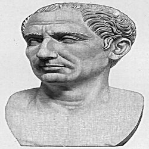
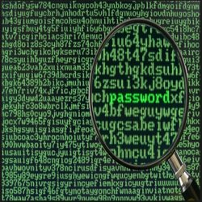

History Of The Caesar Cipher
The Caesar cipher is named after Julius Caesar, who, according to Suetonius, used it with a shift of three to protect messages of military significance. While Caesar's was the first recorded use of this scheme, other substitution ciphers are known to have been used earlier.It is unknown how effective the Caesar cipher was at the time, but it is likely to have been reasonably secure, not least because most of Caesar's enemies would have been illiterate and others would have assumed that the messages were written in an unknown foreign language. There is no record at that time of any techniques for the solution of simple substitution ciphers. The earliest surviving records date to the 9th century works of Al-Kindi in the Arab world with the discovery of frequency analysis.
How Does It Work?
A Caesar cipher with a shift of one is used on the back of the mezuzah to encrypt the names of God. This may be a holdover from an earlier time when Jewish people were not allowed to have mezuzot. The letters of the cryptogram themselves comprise a religiously significant "divine name" which Orthodox belief holds keeps the forces of evil in check.In the 19th century, the personal advertisements section in newspapers would sometimes be used to exchange messages encrypted using simple cipher schemes. Kahn (1967) describes instances of lovers engaging in secret communications enciphered using the Caesar cipher in The Times. Even as late as 1915, the Caesar cipher was in use: the Russian army employed it as a replacement for more complicated ciphers which had proved to be too difficult for their troops to master; German and Austrian cryptanalysts had little difficulty in decrypting their messages.Caesar ciphers can be found today in children's toys such as secret decoder rings. A Caesar shift of thirteen is also performed in the ROT13 algorithm, a simple method of obfuscating text widely found on Usenet and used to obscure text (such as joke punchlines and story spoilers), but not seriously used as a method of encryption.
Diferent Versions Of A Cipher
A construction of 2 rotating disks with a Caesar cipher can be used to encrypt or decrypt the code.The Vigenère cipher uses a Caesar cipher with a different shift at each position in the text; the value of the shift is defined using a repeating keyword. If the keyword is as long as the message, chosen random, never becomes known to anyone else, and is never reused, this is the one-time pad cipher, proven unbreakable. The conditions are so difficult they are, in practical effect, never achieved. Keywords shorter than the message (e.g., "Complete Victory" used by the Confederacy during the American Civil War), introduce a cyclic pattern that might be detected with a statistically advanced version of frequency analysis.
Modern History
In April 2006, fugitive Mafia boss Bernardo Provenzano was captured in Sicily partly because some of his messages, clumsily written in a variation of the Caesar cipher, were broken. Provenzano's cipher used numbers, so that "A" would be written as "4", "B" as "5", and so on.In 2011, Rajib Karim was convicted in the United Kingdom of "terrorism offences" after using the Caesar cipher to communicate with Bangladeshi Islamic activists discussing plots to blow up British Airways planes or disrupt their IT networks. Although the parties had access to far better encryption techniques (Karim himself used PGP for data storage on computer disks), they chose to use their own scheme (implemented in Microsoft Excel), rejecting a more sophisticated code program called Mujhaddin Secrets "because 'kaffirs', or non-believers, know about it, so it must be less secure".
Practical Example
To use the example provided:
- Enter text in to the first box
- Add a number of places to shift the text (Second box)
- Click "Submit"